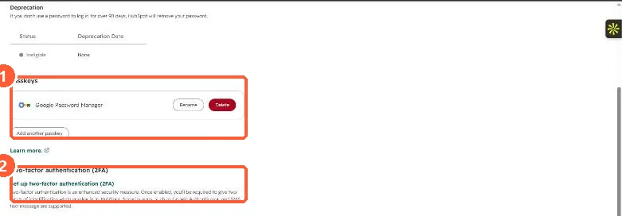
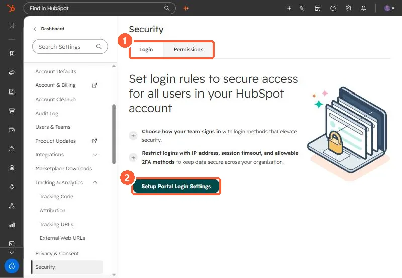
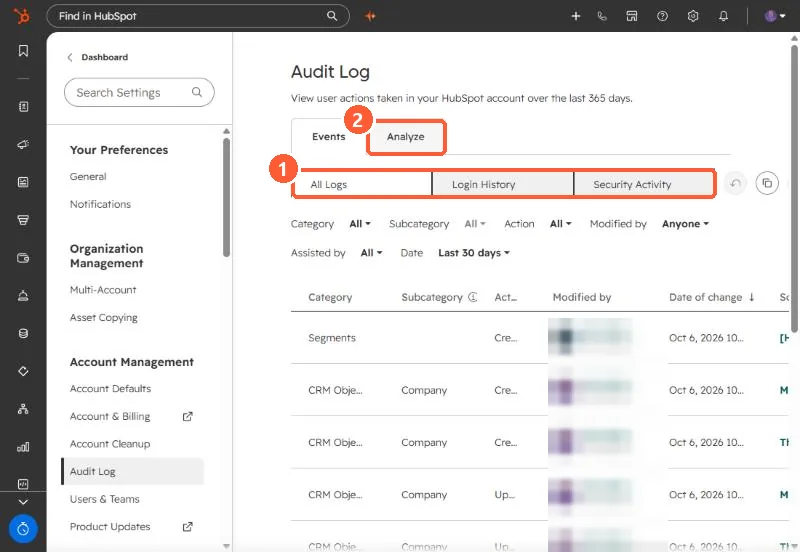
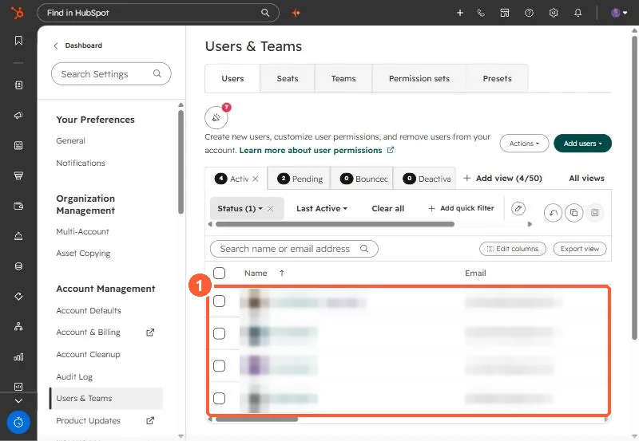
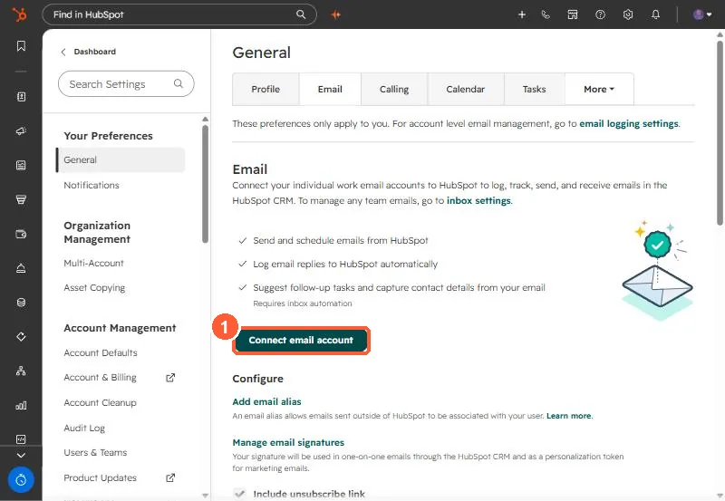

Short answer
Locked out by two-factor? On the 2FA screen click Reset authentication device, then Request admin recovery; you get a code to give a Super Admin, who can then reset your 2FA and passkeys. A Super Admin cannot start this for you. If admin recovery is not offered, use photo ID verification, then HubSpot support. Prevent it with a primary and secondary 2FA method, saved backup codes, and more than one Super Admin. Your own sessions are under Settings, General, Security, and Settings, Audit Log shows what users did, including logins and exports.
1. Your login security settings
Open Settings, General, Security. It lists your passkeys (1) and your two-factor setup (2):


Passkeys are stored by your device or password manager, not HubSpot. If you lose one, recover it through that provider.
2. Locked out: admin recovery
- On the 2FA screen, click Reset authentication device.
- Click Request admin recovery. You get an email with a code.
- Share the code with a Super Admin. They can now reset your 2FA and passkeys.
Who gets the recovery request: with one account, its Super Admins; with several accounts, the Super Admins of the account you have had access to longest; with many Super Admins, the first 25 added. The login screen shows who will be notified before you send it.
If admin recovery is not offered, the next steps are photo ID verification, then HubSpot support.
3. Prevent the next lockout
- Set up a primary and a secondary 2FA method, and download the backup codes.
- Keep more than one active Super Admin, not all relying on the same phone. See users and permissions.
- Account-wide login rules, such as requiring 2FA or single sign-on, live on the Login tab of security settings (2):


4. Login sessions
A new session starts each time you log in from a different device, browser or app. In your security settings you can see each session's Last Active time and log out of individual sessions, except the one you are using. You can only see and end your own sessions; each user checks theirs.
5. The audit log
Settings, Audit Log records actions taken by HubSpot users. Tabs cover All Logs, Login History and Security Activity (1), and Analyze (2) summarizes daily logins, deletions, exports and reports:


- Logins (including mobile) and security activity: all tiers.
- Approvals, communication preference changes and more categories: Enterprise.
- Retention: 365 days on Starter and Professional, unlimited on Enterprise.
- The log records actions by HubSpot users, so changes made by integrations may not appear.
A spike in exports in Analyze is worth a question. For the export audit itself, see exports; for restoring deleted records from a log entry, see restoring deleted data.
6. Audit every user's connections
When meetings or emails are not logging, check users before blaming the integration. Each user connects their own email and calendar:


- List everyone in Users & Teams who meets clients.
- For each, check Settings, General, Email. If it shows Connect email account, nothing is connected (1).
- Check the Calendar tab on the same page. HubSpot lists logging outgoing meetings automatically among what a connected calendar does, and connecting a calendar needs personal email access.


Comparing each person's calendar with the meetings logged in HubSpot on a regular schedule catches gaps before someone asks why the history is empty. See connecting your inbox and meetings.
7. What is changing for 2027
- Passkeys. HubSpot logins support passkeys stored by your device or password manager, alongside 2FA.
- Exports and keys are audit items. The audit log's export counts, the export audit and service key logs together show who took data out. See service keys.
Common questions
Can a Super Admin reset my 2FA without me?
No. You start the request from the login screen and give them the code.
All our Super Admins are locked out.
Use photo ID verification, then HubSpot support.
Can I log out another user's session?
No. Users can only see and end their own sessions.
Why doesn't the audit log show an integration's changes?
It records actions taken by HubSpot users. Check the integration's own logs or property history.
Sources
- HubSpot Knowledge Base: Reset two-factor authentication and passkeys
- HubSpot Knowledge Base: Set up two-factor authentication
- HubSpot Knowledge Base: Set up and log in with passkeys
- HubSpot Knowledge Base: Manage user login sessions
- HubSpot Knowledge Base: View and export account activity history
- HubSpot Knowledge Base: Connect your calendar to HubSpot
- HubSpot Knowledge Base: Calendar sync